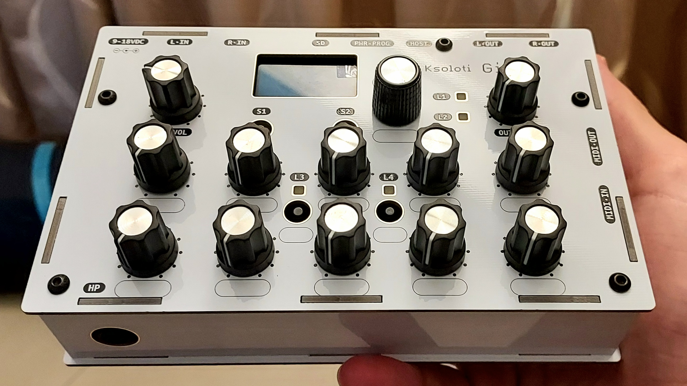

6. Gills
Gills is a standalone desktop unit around the Ksoloti Core.

Black and white (pictured) cases available. The Gills on the picture doesn't have switch caps installed yet, please ignore.
- 1.3" OLED screen, 128*64 pixels, I2C
- 1 Encoder with switch
- 10 Potentiometers
- 4 Buttons
- 4 assignable LEDs: 2 fade-able "Axoloti status" LEDS, green & red. 2 fade-able dual-color LEDs, blue-red
- 2 line input jacks, 2 line output jacks, 6.35mm mono
- Stereo volume pots for line input and line output
- Headphone output jack, 6.35mm stereo. Optional headphone volume pot with a bit of DIY
- 2 Expansion jacks: 3.5mm stereo, no connection by default. Can be wired to become additional analog/digital/expression pedal inputs, or analog/digital outputs
- Optional CV expander board (uses the 2 expansion jacks): 2 synth-level CV outputs, +/-5V or 0..10V via solder jumpers, trimmers for scale and offset, V/oct precision
- DC power input, 9-18V, common 2.1mm * 5.5mm plug, center positive. Power draw: ca. 175mA at 9V with CV expander installed.
- Can also be powered and completely operated via USB port
- DIN MIDI input jack, DIN MIDI output jack (buffered). Input jack can be reconfigured via jumpers into buffered output (not an independent port though, i.e. still 16 MIDI channels overall)
- Ksoloti Core connectors brought out to the rear: Micro SD card socket, USB (Type-C) power/programmer connector, USB (Type-C) host connector
- Since v0.5, a digital microphone header has been added to the Gills PCB which can optionally hold an Adafruit PDM Mic Breakout board. Make sure you get the version with 2.54mm pin header (NOT the so-called 4-JST SH connector). The enclosure now has a small microphone hole in that position.
- Full kit includes PCB (SMD pre-assembled), all parts, and enclosure
- Solder headers, pots, jacks, buttons, encoder, LEDs, OLED yourself
- The kit requires a Ksoloti Core (with pin headers) to function
- Dimensions: ca. 15.8cm x 10cm x 6cm (including knobs). Weight: ca. 0.4kg

"Where gills dance in the depths, secrets unfurl like tendrils of the unknown, beckoning the curious to decipher the riddles of existence."
ChatGPT, 2023